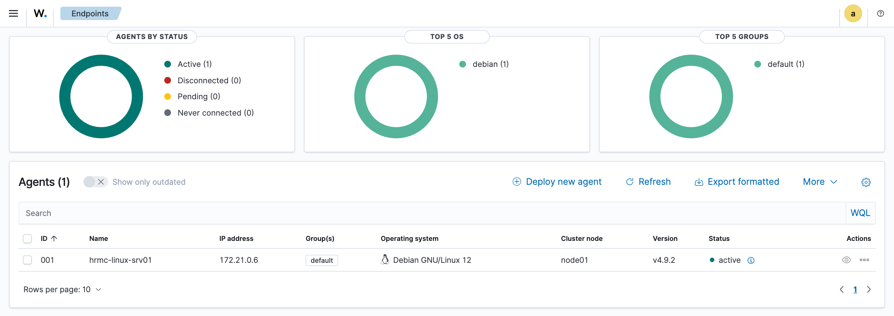
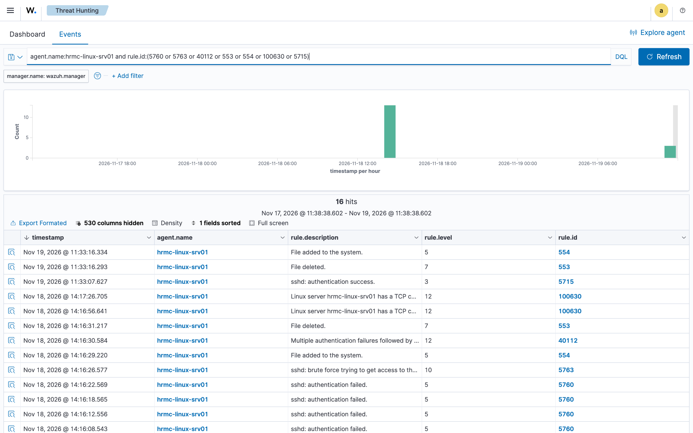

Care Access Navigator
Cybersecurity Basics 2 — Criterion 3: SOC Fundamentals
Defense strategies, incident response, SOC fundamentals, security policy and governance, and security documentation for HRMC
| Prepared by: | Akhila Chennamaneni, IAM & GRC Analyst (author) |
| Organization: | HealthLine Regional Medical Center (HRMC), Care Access Navigator (CAN) capstone |
| Course: | Cybersecurity Basics 2 (DAE 6-Month Cybersecurity, Cohort 2) |
| Rubric criterion: | Criterion 3: SOC Fundamentals |
| Environment: | Entra ID + Keycloak (capstone), Wazuh with live Linux agent, IR1 forensic lab, CISO Assistant |
| Date: | November 19, 2026 |
How this course fits the capstone. Every criterion is shown on the same hospital, accounts, roles, risks and tools as the Care Access Navigator
project, reusing evidence from earlier courses where it already exists and adding new, real work where the rubric asks for it: two incidents on the live Linux
server were investigated and resolved on 2026-11-19 (cases CB2-2026-001 and CB2-2026-002), and a security policy, procedure, guide, two playbooks and a knowledge base were written.
3. SOC Fundamentals
3.1 SOC functions and roles
| Role | Responsibilities | In the HRMC labs |
|---|
| Tier 1 SOC analyst | Watch the dashboard and alert email, triage, open cases, escalate by severity | Triaged SOC1-2026-001 in 4.2 min; CB2 cases in under 6 min |
| Tier 2 incident responder | Investigate, contain, eradicate, recover; collect evidence | Contained and resolved CB2-2026-001/002; IR1 containment and forensics |
| Tier 3 threat hunter / detection engineer | Write and tune rules, hunt for undetected threats, test detections | Wrote SOC 1 and SM1 rules (100500-100651), found and fixed the rule-load-order defect |
| SOC manager / lead | Escalation point, metrics, reporting, shift handover, staffing | Receives level 12+ email; shift handover form (SOC 1); metrics (SM1) |
Main SOC functions: continuous monitoring, alert triage, incident response, threat intelligence and hunting, detection engineering, reporting and compliance support.
In the lab one person (the author) performed all four roles.
3.2 Monitoring tool configured and two types of network activity monitored
Tool: Wazuh 4.9.2 with the live agent hrmc-linux-srv01 (configured in Security Monitoring 1). Network activity monitored on it:
| Network activity | How Wazuh sees it | Real example |
|---|
| Inbound remote logins (SSH, TCP 22) | auth.log via the agent: every failed and accepted login with source IP and port | 8 failed logins from 172.21.0.7 then 'Accepted password for tjones' (40112); after hardening 'Accepted publickey for sathya' (5715) |
| Outbound TCP connections | Agent command every 30 s lists established and pending connections; rule 100630 flags known-bad addresses | 172.21.0.6:53766 -> 203.0.113.77:443 (100630, level 12) |
| Windows network connections (imported samples) | Event 5156 with application and destination; rule 100621 | rclone.exe -> 203.0.113.77:443 (SM1) |

CB2-04: the monitored server: agent 001 hrmc-linux-srv01 active (Wazuh endpoints)
3.3 Alert management: two alerts generated, investigated and resolved

CB2-01: Wazuh Threat Hunting for hrmc-linux-srv01: the attack on 18 Nov (5760 → 5763 → 40112, FIM 554 / 553, 100630) and the resolution on 19 Nov (5715 key login, FIM 553 / 554). Times are US Eastern.
| Alert 1: SSH brute force → compromise (CB2-2026-001) | Alert 2: EHR export staging (CB2-2026-002) |
|---|
| Generated | 5763 (L10) 2026-11-18 19:16:26 UTC; 40112 (L12) 19:16:30 UTC; email to Tier 1 | 554 (L5) staged file added 19:16:29; 553 (L7) export deleted 19:16:31; 100630 (L12) outbound 19:16:56 |
| Investigated | Same source failed 8 times then succeeded: true positive; SEV-2; triage 19:22:19 (5.9 min) | Same host and minute as alert 1; staged file = all exports combined; linked case |
| Contained | 2026-11-19 16:32:30: passwd -l tjones, shell nologin | 16:33:10: staged file preserved in /root/ir_evidence, hashed |
| Resolved | 16:32:31: SSH keys only, MaxAuthTries 3, banner; re-test refused the password | 16:33:16: staged file removed, export_1.csv restored; hash = known-good |
| Closed | 16:40 UTC, lessons recorded | 16:40 UTC, lessons recorded |
: password guessing is now refused (attacker retries tjones with the old guessed password)
***************************************************************************
HealthLine Regional Medical Center - AUTHORIZED USE ONLY
This system holds protected health information (ePHI). Use is limited to
approved HRMC work under the HRMC Information Security Policy (POL-SEC-01),
section 4 "System Use". All activity is logged and monitored. Misuse may
lead to disciplinary action and legal penalties (HIPAA).
***************************************************************************
tjones@hrmc-linux-srv01: Permission denied (publickey).
== VERIFY 2: legitimate key login for sathya shows the system-use banner
***************************************************************************
HealthLine Regional Medical Center - AUTHORIZED USE ONLY
This system holds protected health information (ePH
Excerpt of evidence/remediation_transcript.txt: the attacker's password is refused after hardening; the policy banner is shown.
3.4 Threat detection: analysis of one identified threat
| Analysis step | Credential guessing against hrmc-linux-srv01 |
|---|
| Threat | Online password guessing (MITRE ATT&CK T1110.001) followed by valid-account use (T1078) and staging / exfiltration (T1074, T1041) |
| Indicators | Source 172.21.0.7; 8 'Failed password' lines in about 35 s; success from the same source; new file in /srv/ehr_exports; connection to 203.0.113.77:443 |
| How it was detected | Wazuh built-in rules 5760 → 5763 (frequency) → 40112 (correlation: failures then success); FIM real-time 554 / 553; custom rule 100630 on the connection list |
| Why it worked | Password authentication enabled on SSH; weak, guessable password; no egress filtering |
| Impact | Server access as a normal user; synthetic export files staged; possible transfer (SEV-2) |
| Response | PB-01 and PB-02; cases closed with evidence (section 3.3) |
| Detection improvement | Add a rule for any new file in ePHI folders outside a change window (level 10), and raise 100630 to level 13 when it follows 40112 on the same host |